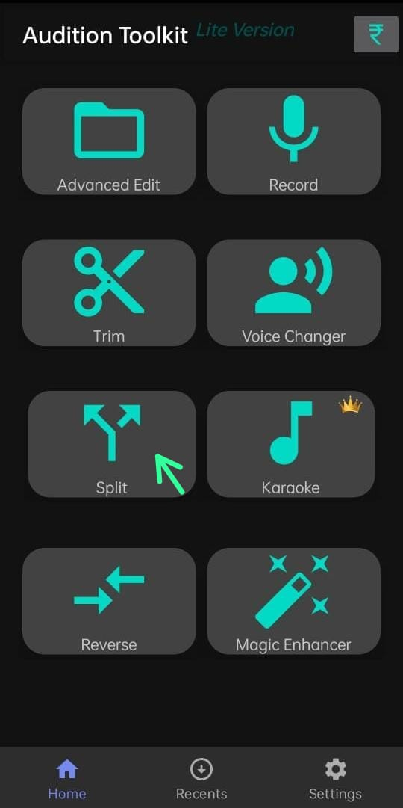
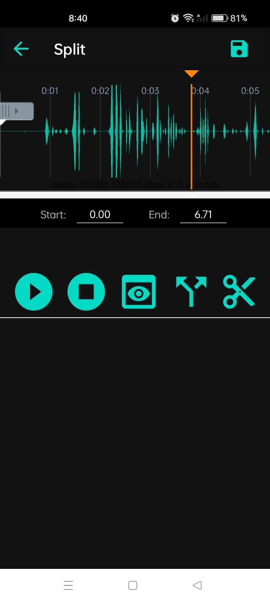
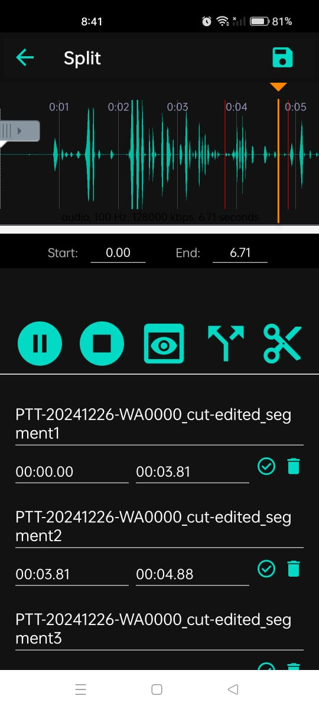

✂️ SPLIT
📖 Split Description
Split refers to the process of dividing an audio track into multiple segments. This is especially useful when you want to isolate specific parts of a track—like extracting a chorus, removing a section, or preparing samples for remixes.
Splitting is a fundamental editing technique widely used in music production, podcast editing, interviews, and content creation to extract only the needed portions and enhance clarity. Whether you’re fine-tuning a single phrase or breaking down an entire song into parts, the split tool gives you precise control over audio segmentation.
🎚️ Split – User Guide
Steps:



- Select the audio file you want to edit.
- Once loaded, the audio waveform appears along with a split marker at the beginning.
- Drag the split marker to the point where you want to divide the track.
- Click the Split icon (located near the Preview button on the play bar).
→ This creates two segments: one before the marker and one after. - You can repeat this process to create multiple segments by moving the marker to different positions and splitting again.
- Each segment can be renamed, reordered, or deleted.
⚠️ Deleting a segment moves it to another section for recovery.
🔪 Use the Cut option if you want to permanently discard it. - Once satisfied, click Save on the top right corner.
- Choose your output format (e.g., MP3, WAV).
- Optionally, enter a new title for your split file.
- Finally, hit the Save button at the bottom to export your edited audio.
✅ Tip: Preview the audio after each split to ensure that transitions are clean and no valuable content is missed.